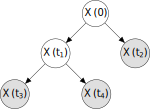

Last updated: 2018-03-10
Code version: 1e98d66
\[ \newcommand\var{\text{Var}} \newcommand\cov{\text{Cov}} \newcommand\E{\text{E}} \]
This section is built on the top of multivariate normal and normal Markov chain, so it is better to read them beforehand.
Random walk describes the process that
\[\begin{align*} Z_k &:= X_k - X_{k - 1} \\ &= \begin{cases} \Delta x & \text{, with probability $\frac{1}{2}$} \\ -\Delta x & \text{, with probability $\frac{1}{2}$} \end{cases} \end{align*}\] In this process, \[\begin{align*} \E(X_k) &= \E(X_{k - 1}) = \cdots = 0 \\ \var(X_k) &= (\Delta x)^2 + \var(X_{k - 1}） \\ &= 2(\Delta x)^2 + \var(X_{k - 2}）\\ &= \cdots = k (\Delta x)^2 \end{align*}\]Consider a drunk person walk along a line and let’s record the position of he/she as time goes. Suppose the person can either go right/left for \(\Delta x\) meters after one second. To record, we can simply write down the position at time \(t = 1, 2, \cdots\) seconds (or take picture every second). At time \(t = k\) seconds, let the position to be \(X_k\). Initially, the person is at position 0 (\(X_0 = 0\)).
Suppose instead of recording position every second, we do this every \(\Delta t\). Then \(\Delta x\) changes accordingly. Ideally, if \(\Delta t\) is infinitely small, it becomes a continous time Markov chain since we have the access to the position at any time point. If we keep the total recording time (\(T\)) the same, now we have \(\var(X_{\frac{T}{\Delta t}}) = (\Delta x)^2 \frac{T}{\Delta t}\).
If \(\Delta t \rightarrow 0\) and \(\Delta x \rightarrow 0\) independently, the variance goes to zero which is not an interesting process any more. To ensure the process to have finite non-zero variance at the end (i.e. go to somewhere but not impractically far away), we need \(\Delta x = \sigma \sqrt{\Delta t}\). Note that this requirement implies that \(\var(X_{\frac{T}{\Delta t}}) = \sigma^2 T\).
Brownian motion is what we have described above, namely the continous version of random walk, which should satisfy the same properties as random walk. Namely,
Formally, a stochastic process \(\{X(t), t \ge 0\}\) is Brownian motion if
Note that \(X(t)\) marginally is univariate normal, but it also correlated with \(X(t')\) by Makovian property. Property ii is analogous to random walk but needs to be scaled properly to make the process non-trivil (see property iii). Also, the normality of \(X(t)\) can be induced by property ii with central limit theorem since intuitively increment is the accumulation of many (infinite) random walk steps.
Regarding the simulation, we are interested in how the value change among a set of time points, \(t_1 < t_2 < \cdots < t_n\). Making use of stationary and independent increments and Markovian property, the procedure is
# Initialization
Set t_0 = 0 and X(t_0) = 0
# Simulate t_1, ..., t_n in order
For i = 1, ..., n
# Draw increment
Draw Z from N(0, \sigma^2 \times t_i - t_{i - 1})
# Update
X(t_i) = X(t_{i - 1}) + Z
End forNote that this post has implemented a simpler version of the above pseudocode. The only difference is that it is realizing a time series with equal interval length.
As this post has pointed out, under such simulation scheme, \(X(t_1), \cdots, X(t_n)\) can be written as \(X = AZ\) with proper scaling (let \(Z_i\) be standard normal)
\[\begin{align*} X(t_1) &= \sqrt{t_1} Z_1 \\ X(t_2) &= X(t_1) + \sqrt{t_2 - t_1} Z_2 \\ &= \sqrt{t_1} Z_1 + \sqrt{t_2 - t_1} Z_2 \\ \vdots \end{align*}\] Then is \(n\) by \(n\) matrix \[\begin{align*} A = \begin{bmatrix} \sqrt{t_1} & 0 & 0 & 0 & \cdots \\ \sqrt{t_1} & \sqrt{t_2 - t_1} & 0 & 0 & \cdots \\ \sqrt{t_1} & \sqrt{t_2 - t_1} & \sqrt{t_3 - t_2} & 0 & \cdots \\ \cdots \end{bmatrix} \end{align*}\]Making use of the definition of MVN (see post), we can conclude that \(X(t_1), \cdots, X(t_n) \sim N(0, AA')\). It suggests an alternative way to simulate Brownian motion but more importantly it provides a simpler way to write likelihood beyond the one based on Markovian property.
More specifically, from the form of \(A\) presented above, we can conclude that \(\cov(X(s), X(t)) = s, \forall 0 < s < t\).
From the previous subsection we can conclude that Brownian motion is one example of Gaussian process.
Intuitively, Gaussian process is a way to capture the linear dependency between \(X(t)\)’s so it can go beyond Markovian dependency. For instance, the Brownian motion on tree is a slightly more complicated Gaussian process than Brownian motion where the dependency is captured by tree, i.e. \(X(t) - X(Pa(t)) \sim N(0, \sigma^2 (t - Pa(t)))\), where \(Pa(t)\) is the parent of \(t\) (see below tree as an example, where \(t_1\) is parent of \(t_3\) and \(t_4\)).

More closely related nodes share more \(Z_i\)’s so ends up with higher correlation. Or more precisely, analogous to regular Brownian motion, \(\cov(X(s), X(t)) = \text{closest common ancestor}(s, t), \forall s, t \in \text{tree}\). For the tree shown in the figure, ultimately, we get to see \(X(t_3), X(t_4), X(t_2)\) only but the covariance matrix is captured by tree structure already.
Spatial Gaussian process is another example. Instead of interpreting \(t\) as time, here it is interpreted as position. Then, under Gaussian process framework, we want to come up with mean and covariance for any set of spatial positions. Note that valid MVN needs covariance matrix to be positive semi-definite. To ensure that \(\cov(X(t_i), X(t_j)) = k(X(t_i), X(t_j))\) where \(k(\cdot, \cdot)\) is kernel function (see wikipedia for an explanation of why). Intuitively, kernel assigns bigger covariance to spatially close pair and in practice, you get to decide how covariance is related to ‘spatial distance’ by picking kernel (see an incomplete list of kernels here) and even estimating the parameters in kernel function based on the how good it fits data.
sessionInfo()R version 3.4.3 (2017-11-30)
Platform: x86_64-pc-linux-gnu (64-bit)
Running under: Ubuntu 16.04.3 LTS
Matrix products: default
BLAS: /usr/lib/libblas/libblas.so.3.6.0
LAPACK: /usr/lib/lapack/liblapack.so.3.6.0
locale:
[1] LC_CTYPE=en_US.UTF-8 LC_NUMERIC=C
[3] LC_TIME=en_US.UTF-8 LC_COLLATE=en_US.UTF-8
[5] LC_MONETARY=en_US.UTF-8 LC_MESSAGES=en_US.UTF-8
[7] LC_PAPER=en_US.UTF-8 LC_NAME=C
[9] LC_ADDRESS=C LC_TELEPHONE=C
[11] LC_MEASUREMENT=en_US.UTF-8 LC_IDENTIFICATION=C
attached base packages:
[1] stats graphics grDevices utils datasets methods base
loaded via a namespace (and not attached):
[1] compiler_3.4.3 backports_1.1.2 magrittr_1.5 rprojroot_1.3-2
[5] tools_3.4.3 htmltools_0.3.6 yaml_2.1.18 Rcpp_0.12.15
[9] stringi_1.1.6 rmarkdown_1.9 knitr_1.20 git2r_0.21.0
[13] stringr_1.3.0 digest_0.6.15 evaluate_0.10.1This site was created with R Markdown